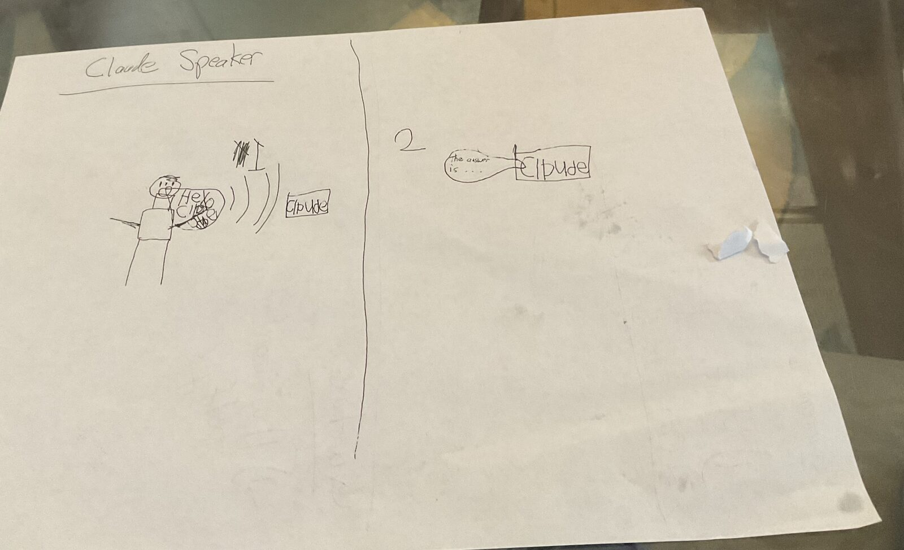
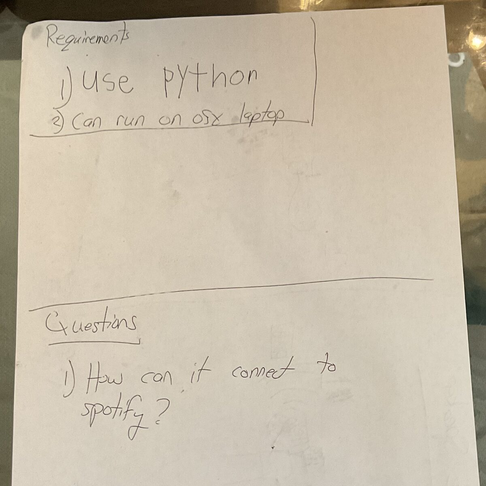

Level 2 Programming
Tejas is six. He reads Level 2 books. Over a weekend he built a smart speaker: you say "Hey Claude," ask a question out loud, and the laptop answers out loud.
He did not type a line of Python.
It started on a sheet of paper

Two panels, drawn in pen. On the left, a stick figure says "Hey Claude." Sound waves travel across the page into a box labeled Claude. On the right, panel 2, the box talks back: "the answer is…"
That is the entire product. A person talks, the box answers. The word Claude is spelled a slightly different way nearly every time it appears on the page, which does not make the design any less clear.
Then page two:

Requirements
- use python
- can run on osx laptop
Questions
- How can it connect to spotify?
Look at what is on those two pages. A picture of the product. Two hard constraints on how it gets built. One open question, written down instead of guessed at.
That is a design document. It is missing nothing important.
What happened next
The two photos went to Claude Code, which first turned them into a written design — the sketch expanded into modules, interfaces, and a build order — and then wrote the code.
The finished thing is five small Python files and a loop:
while True:
wake.wait_for_wake() # listen for "Hey Claude"
audio = audio_in.record_until_silence() # record the question
question = stt.transcribe(audio) # Whisper, running locally
answer = brain.ask(question) # the Claude API
tts.speak(answer) # say it out loud
Both requirements held. It is Python, and it runs on the laptop with no extra hardware — the built-in microphone and the built-in speakers are the whole device. Only one of those five steps uses the internet; the microphone, the wake word, and the speech recognition all run on the machine, so the room is not streamed anywhere until somebody actually says the wake word.
The wake word was the hard part
The drawing says "Hey Claude," and the drawing is the specification.
The trouble is that openWakeWord — the small local detector that listens for the phrase — ships with only a handful of pre-trained wake words, and "hey claude" is not one of them. The honest options were to accept "hey jarvis" or to train a new one.
We trained a new one, on the same laptop. No GPU, no cloud, and nobody had to say "Hey Claude" into a microphone even once: a text-to-speech engine says the phrase thousands of times in hundreds of different synthetic voices, a pile of unrelated speech and music and noise serves as the counterexamples, and a small network learns to tell the two apart. About a gigabyte of downloads and an hour of waiting.
It wakes on "hey claude" at 0.997 confidence and stays under 0.005 on ordinary conversation. It is not perfect — it likes some voices more than others, and "hey clyde" scores 0.484, just under the line — but it works, and it is a real model that did not exist before.
It is on Hugging Face as gdiamos/hey-claude: 210 KB, drop it into openWakeWord and it listens for the phrase. The whole procedure is written down too, including the five things that break when you try to run openWakeWord's trainer on a Mac.
Level 2
Children's books have a number printed on the cover. Level 1 is a few words a page, with the picture doing most of the work. Level 2 is short sentences and a real story, read mostly on your own, with somebody nearby for the hard words. Level 3 is chapters.
Tejas reads Level 2.
Now look at that requirements page again. use python. can run on osx laptop. How can it connect to spotify? Short declarative sentences. One idea each. Nothing hedged, nothing subordinate, no sentence that needs a second reading.
That is Level 2 prose. It was also a complete enough specification to build working software from.
Programming used to start at the other end of the shelf. Not Level 2, not even the chapter books — the manuals. You could not make your first real thing until you could read and write the way adults write for other adults: syntax, types, stack traces, documentation. The distance between wanting something and being able to ask for it was measured in years, and most people who wanted something quit somewhere in the middle of that distance.
That distance is what collapsed. Not the difficulty of building software — the reading level required to ask for it.
Asking well is still a real skill, and this is where the sketch is genuinely good. It does every job a specification has to do:
- It shows the product working, from the outside, from the user's side.
- It names the constraints that actually constrain — Python, macOS laptop — and stays quiet about the hundred decisions that did not matter.
- It writes down what nobody knows yet instead of hiding it. How can it connect to spotify?
That last one is the most grown-up thing on the page. A question you have written down is a question somebody else can answer. The Spotify answer turned out to be tools: Claude does not play music itself, it asks our code to, and our code calls Spotify. It went into the design document in full — and then it got deferred, because getting the speaker talking was worth more than getting it singing. Knowing which one to build first is a Level 2 skill too.
None of this says the hard part went away. Somebody still had to notice that the wake word did not exist and go make one, and that was not a Level 2 job. But it is no longer the first job. The first job is knowing what you want and being able to say it in short sentences.
The drawing was the source code. Everything else was reading the hard words out loud.
What's next
Roughly in order of fun:
- Play music by voice — the Spotify question, finally answered out loud
- Weather, timers, web search
- Remembering conversations between runs
- A light that shows when it is listening
- Moving it off the laptop and onto a Raspberry Pi, so it is a real box sitting on a shelf — which is what the drawing showed all along
The code
All of it is public:
- github.com/greg1232/hey-claude — the speaker itself, the two photos above, the design document they turned into, and the training scripts.
- huggingface.co/gdiamos/hey-claude — the trained "Hey Claude" wake word, ready to use.